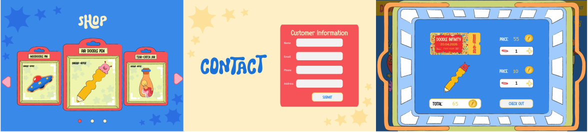
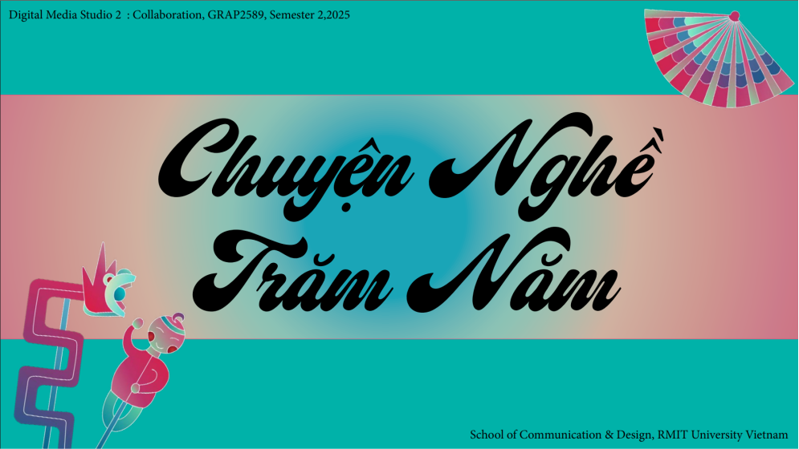
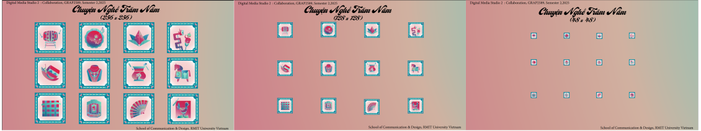
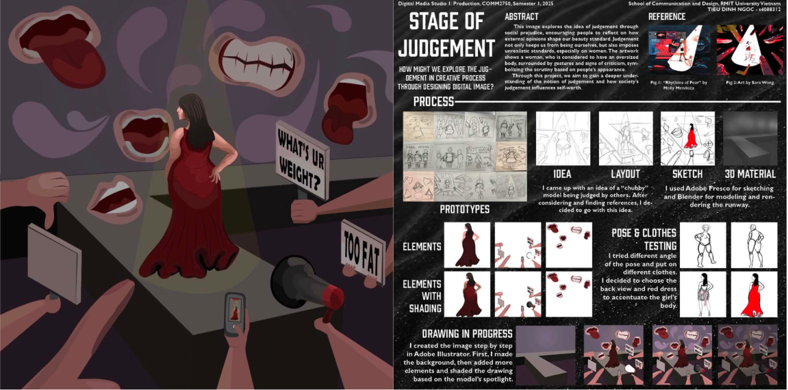
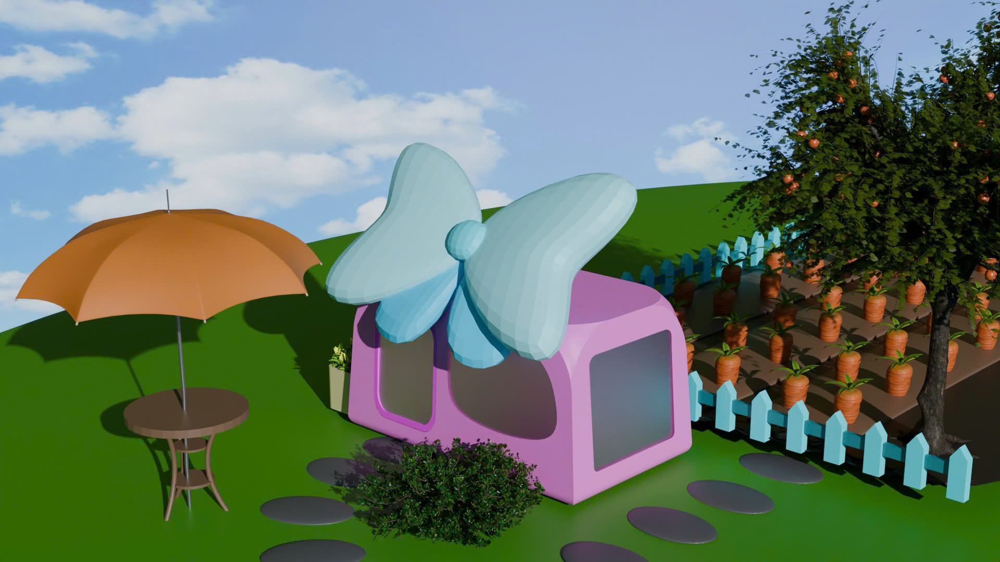

My name is Tieu Dinh Ngoc, but you can call me Ngoc Tieu. I am a Digital Media student at RMIT University, with a passion for visual storytelling and creative design. I enjoy exploring different forms of media, from graphic design and illustration to video production and sound design. Through my work, I aim to create engaging experiences that connect with audiences and communicate ideas effectively. I am always eager to learn new skills, experiment with creative concepts, and grow as a designer.
Software
Education
RMIT UniversityBachelor of Design Majoring in Digital Media
The Doodle-Verse Art Fair is a creative and healing event set on a planet where humans, aliens, and mermaids live together. Using doodling as an easy, expressive art form, the fair invites everyone to share their emotions, stories, and inner thoughts through spontaneous drawings (doodling). It’s a space for connection, imagination, and emotional release, where every line tells a piece of someone’s universe.
In this project, I was responsible for creating the vector illustrations and graphic assets using Adobe Illustrator and Figma. I developed visual elements that supported the project's overall design and ensured consistency throughout the final outcome.

Chuyện Nghề Trăm Năm

In recent years, many of Vietnam’s traditional craft villages have been quietly fading away, caught between modernization and the lack of generational continuity. With fewer young people interested in inheriting and continuing these ancestral professions, and many master artisans growing old without successors, these villages are at risk of disappearing. Their unique handmade products are often seen as outdated or are only sold as souvenirs to foreign tourists. This icon set of 12 traditional Vietnamese craft villages aims to preserve and celebrate the cultural richness embedded in each of these professions. Through visual storytelling and iconography, our project seeks to raise awareness, spark appreciation, and reconnect younger generations with these fading traditions, by making them more accessible, recognizable, and relevant in a modern digital world.

In this project, I was also responsible for creating the vector illustrations and graphic assets using Adobe Illustrator.
Stage of Judgement

Rabbit Bakery
“Rabbit Bakery” is a digital illustration designed as a game environment concept, inspired by the cute and colorful visual style of children’s games such as Soc Nhi. The scene depicts a small bakery set in a peaceful garden, using soft pastel colors, rounded shapes, and simplified details. The design focuses on creating a friendly, playful atmosphere suitable for young audiences, while emphasizing storytelling and environment design for casual or educational games.
This project is inspired by an interpretation of schizophrenia, recreating distorted perception through an immersive visual environment. It features diverse interactions, including sound, camera input, and sound-based interaction with models, built using a combination of MediaPipe and a MIDI controller.
This is the video of our final project. My role in this project was 3D Modeller. I was responsible for modeling 3D assets, ensuring they were visually appealing and suitable for the project's requirements.
A project by Tiêu Dĩnh Ngọc, Hồ Kiều Phương, Trần Tùng Phương, Phạm Hoài An, Nguyễn Hoàng Duy · COMM2748 Digital Media Studio 3: Experimentation · Semester A/2026
Rabbit Bakery 3D

This is the 3D version of my Rabbit Bakery digital illustration. In this project, I was responsible for turning the 2D artwork into a 3D scene. I modeled the bakery, the carrot garden, the table with the umbrella and the stepping stones, and tried to keep the soft colors and rounded shapes from the original design.
Video Essay: Self-Driving Cars
This is a video essay we made for a class project about self-driving cars. It talks about what self-driving cars are, their pros and cons, and our predictions for how they could change the way people live and travel in the future.
In this project, I was responsible for making the video. I designed the visuals in Figma and edited the whole video in Premiere Pro.
This video was edited for my high school club as a welcoming project for new students. The video focuses on visual storytelling and pacing to create a friendly, approachable atmosphere while introducing the club’s identity and activities. Due to storage limitations, the original project file has been deleted from my device; however, the final video can still be viewed via the attached link. Full editing credits, including my name, are included in the video.
NUC 2025
Here are some of the contents I created during the tournament.
Mazery is a 2D animation film about Tiểu Mỹ, an influencer who gets trapped in a maze made of toxic words. While trying to find her way out, she realizes that she has also hurt other people with her own words.
In this project, I was the director. I was responsible for writing the script, creating the storyboard and editing the sound, making sure the story and the audio worked together to get the message across.
Empty of Symphony
Our project is a sound-driven story about memory and family connection. The story follows a son returning home and reconnecting with memories of his father through environmental sounds like footsteps, doors, TV static, and voice recordings.
In this project, I was responsible for video editing and sound design. I synchronized the visuals with audio elements, ensuring that the timing, transitions, and sound effects worked together to create a cohesive and engaging viewing experience.
RBT 2026
Here are some photos I took during the tournament.
VCBC 2026
Here are some photos I took during the tournament.